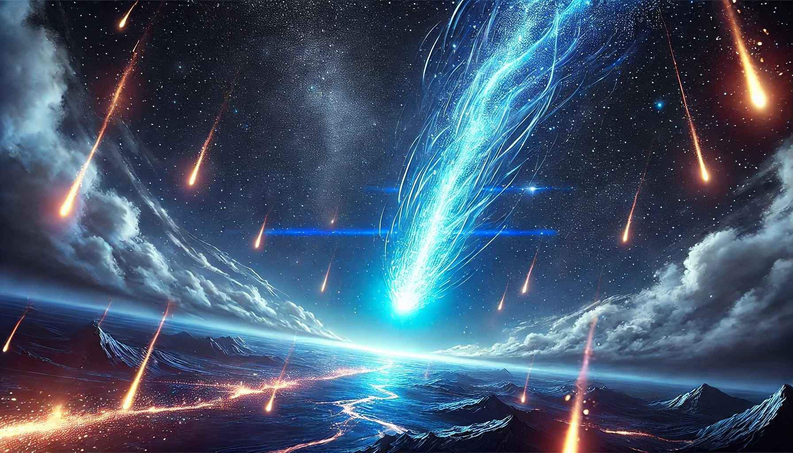

Une aventure de puzzle et exploration où chaque choix façonne votre légende.
Découvrir le jeuPlongez dans un monde mystérieux et enchanteur, façonné par une collision entre la réalité et une énergie venue d'ailleurs. Chaque région regorge de secrets, de défis et de fragments d'histoire à découvrir.
Avec une atmosphère immersive et un design visuel unique, Fragments of Ember est plus qu'un simple jeu : c'est une invitation à explorer un monde vivant, où vos choix influenceront le cours de votre voyage.
Chez Emberfall, nous visons à créer une expérience captivante qui allie réflexion, exploration et émerveillement. Nous croyons que les jeux peuvent raconter des histoires puissantes et offrir des moments mémorables, tout en stimulant l'esprit du joueur.
Fragments of Ember reflète cette ambition en proposant une aventure où chaque joueur peut écrire sa propre légende.